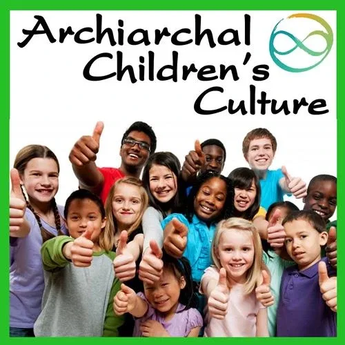
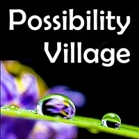

Archiarchy prepares Twenty-First Century Children for Authentic Adulthood Initiatory Processes.
Could there be anything more important or exciting than taking responsibility for the future of human beings on planet Earth?
Children's Culture Begins Before Birth
For 200,000 year human beings thrived in villages with women's culture, men's culture, and children's culture.
Then, in Western Europe, one-hundred-fifty years ago, 'school' was invented. It prepared Westerners to serve as soldiers in armies, or workers in corporations, but those times are over. As the capitalist patriarchal empire fades into history, new options are emerging.
Returning to the stone age is not a workable answer. Yet if you were ever lucky enough to visit the regenerative culture village such as the Karen, Hmong, or Akha hill tribes of North Thailand, or the villages of the North Philippines such as Banaue or Bontoc,
CHILDREN'S CULTURE BEGINS BEFORE BIRTH
The questions we have about raising our children are perhaps the most poignant questions we can ever ask. The answers we choose are of great consequence, because what we provide for our children introduces them to the world. It forms reference points for the rest of their lives, and teaches them how to parent their own children.
- Shall we breast feed the baby?
- For how long?
- Do we give the baby a bed of its own?
- Do we put the baby in a separate room?
- Do we let it cry itself to sleep?
- Do we try to make the baby sleep and eat according to a schedule?
- Do we use cotton diapers, or disposables?
- How do we punish the child?
- How do we teach the child?
- What does all this matter anyway?
- It is just a baby!"
These are the kinds of questions asked by those crossing over the culture-shift bridges from the modern capitalist patriarchal empire, to next culture - Archiarchy, the culture naturally emerging around the world now that matriarchy and patriarchy have run their course.
"Many of us never risk asking such questions for fear of having to face answers that conflict with how our mother and father raised us," say one Archiarchy dad. "But by not asking these questions ourselves, we tend to adopt the same answers our parents used, or, alternatively, whichever answers have been successfully marketed to us through television and magazines.
Childraising answers that come from Standard Human Intelligence Thoughtware (S.H.I.T.) seem to include hidden agendas:
- to make sure we send our children to public schools
- to sell us more plastic and chemical disposable products
- to have us visit the doctor ongoingly for vaccinations and antibiotics
- to have us rely on so-called 'authorities' for answers instead of trusting our own instincts and insights
- etc.
It is difficult to find reliable information about such an important and dear subject as the best way to raise our own children.
That is why it is such a joy to speak with parents who have asked these same questions long ago, raised their children in somewhat "non-standard" ways, learned what works and what does not, and are willing to share their insights.
Many home-birth unschooling parents began their childraising education by accident. Perhaps you were travelling around the world on a two-and-a-half year 'eduvacation' throughout Southeast Asia and the South Pacific. While hiking into jungles beyond the reaches of roads and cars, you may have found yourselves sitting among non-modernized villagers living in traditional ways hundreds, if not thousands, of years old. Without intending to research the subject of natural childraising, lessons might begin to seep into your perspective. You might spend weeks or months on South Pacific atolls, in North Thailand with the hill-tribes of Akha and Karen, deep in pre-industrial China, on Viti Levu in the Fiji Islands, in the North Philippine villages of Bontok, Banaue and Sagada, or on the South Philippine islands of Cebu and Davao. There you keep noticing the ever-present roving band of alert and interested pre-school children.
Here is authentic Children's Culture. The dozen members of this mixed-age band of four- to eleven-year-old girls and boys is the most effective 'learning machine' imaginable. Whatever the oldest child can figure out, the first thing they do is teach it to the next one down the line, who teaches it to the still younger ones, fully engages, fully entertained. Incredibly, it is the four and five year olds who tote around the newborn babies! This organism of synergetic education and temporary community flourishes from generation to generation, discovering what is wanted and needed, eventually evolving deeper knowledge and understanding than the current generation of adults can hold.
Authentic Children's Culture is beautiful and functional, even if it lacks most of the commonly accepted 'necessities' of Western technology and medicine. Children respectfully relate to each other, and to the children of travelers whose quickly and effortlessly join the crew.
Children who are homebirthed and unschooled in Archiarchy become global citizens in a very different way than children who have come to be known as Third Culture Kids, the children of diplomats or military who leave their first culture to travel for work, but are never long enough in one place to meld with local cultures - the second culture, so end up in some kind of Expat Children's club. Perhaps if Third Culture Individuals realized they are at the doorstep of Archiarchy which welcomes their awareness and experiences in 'cultural relativity, they would find immediate value from what may before have been considered a handicap or a hardship.
Here is an Archiarchy Children's Culture Baby Primer, suggestions of best practices and childraising possibilities to consider, especially during those first few precious years of life:
BREASTFEED YOUR BABY FOR TWO YEARS
Open yourself to the idea of breastfeeding your baby - no matter what anybody says.
You could choose to change your familiar self-image for the next few years - become a breastfeeder!
Villagers give their baby the breast on demand for at least two years. They feed them only breast milk for their first six months, gradually adding solid food after that.
There is NOTHING that can replace the nurturing, life-supporting experience of skin-to-skin contact between baby and mother during nursing time. We could speak for hours about the virtues of naturally breastfeeding your baby. Fortunately, there are already excellent books and resources available so we do not have to do that.
To receive breastfeeding support from mothers who have breastfed, or are breastfeeding their own babies, contact your local La Leche League International.
USE A FAMILY BED - NOT A CRIB
Consider letting your child sleep with you in a big 'family bed' until they are ready to sleep in their own bed.
Imagine how fear of the dark, fear of lightening and thunder, fear of nightmares, or fear of abandonment could all resolve themselves without residue if there was certainty of a Mother's or Father's arm to snuggle into all night long.
Families have been sleeping together for two-hundred thousand years, and still do today, around the world. Putting a baby "in their own room" is a recent development with serious social and psychological side effects.
DO NOT PUT A 'PACIFIER' IN YOUR BABY'S MOUTH
Putting a piece of rubber in your baby's mouth delivers a very powerful negative message to them. They realize that what they have to say is not wanted.
When a parent disempowers their own child by preventing them from speaking, the child knows this is not as it should be, and begins to view the world as unsafe for them.
Instead of providing security for the child, rubber sucking devices may instead deliver insecurity.
Begin to look at your family's use of television, the internet and video games. What purpose are these activities serving? What value are they creating for your family?
What else could be happening during the times spent watching the screen?
Some families and communities simply get rid of their televisions altogether.
Other families keep the TV packed away in a closet, and bring it out to watch Possibility Videos now and then.
Moving the TV out allows you to think of something else to do with your precious family time. Play music together, sing, weave, sew, cook, play games, or just hang out and relax together as a family. Years later you will look back at these moments as the best of times.
READ TO YOUR CHILD EVERY DAY
Children to not do what you say. They become who you are.
If you are a reader, they too shall read.
One unschooling mom was getting worried when her first daughter was not yet reading on her own by the time was nine years old. Then one day the daughter picked up a "See Spot Run" beginners reading book, read through it cover to cover, thought it was stupid, then picked up Marion Zimmer Bradley's The Mists Of Avalon and read it as her first book.
The younger daughter did not start reading until she was twelve years old, and then grabbed the entire Harry Potter series of books and read them all.
Read out loud, be it Possibility Books, adventure stories, Shakespeare, poetry, spiritual literature, or historical fiction. Do not read the news to them, murder mysteries, or overtly sexual material. Did we really have to say this? Yes, especially if your Gremlin is not Transformed, and your Adult Ego State is not Decontaminated.
ABSOLUTELY NO PHYSICAL VIOLENCE FROM YOU
Striking, hitting, shaking, slapping, yanking, spanking, pinching, whipping, beating, or jerking your baby - ever, for any reason - is a sign of your own deep pain.
Yes. You are wounded.
When an adult tries to solve their problem by physically abusing their child, this is time to get some immediate help.
Suggestions include figuring out how to have more rest and less stress, calling someone for support, joining a parenting support group, and getting into therapy or a "twelve-step" program.
Violence to children is a serious infraction and cannot be dealt with alone. Pay attention to your habits of behavior under stress. Do you terrorize your baby as a way of dominating, controlling or manipulating them? If so, get help now.
SHARED STORY
Patricia and Gil live with their three children, Pedro, Alice and Leo, in Portugal.
"As soon as we (Patricia and Gil) did the ETB and PM Lab and returned home we brought 2 distinctions to our kids: that emotions have energy and information and are very useful to us, and that we all have a gremlin that intends to protect us in ways that most of the times create separation between us, members of the family. A couple of days after we came back from the trainings, a friend of the children was here for the afternoon and out of the blue pushed the two younger siblings, Alice and Leo. We brought them all together started a sharing circle. The friend told that he was feeling a bit sad for having pushed but happy to have done something Pedro told him to. Pedro started with a Gremlin happy face and laughing and giving excuses and then shared that he was angry about something that Alice and Elo did just before. Alice and Leo shared they were a bit sad but also mention that all was fine (in my view some fear showing up for experiencing the first time one of these feeling sharing circles and having a deeper conversation among siblings and friends). We came back to Pedro that after some time of going deeper into the anger and through the gremlin, he started crying compulsively due to a morning episode where he wanted some attention from Patricia, his mom, and did not got it. We all stayed in circle, me and Patricia also shared out feelings about the whole process, and brought the clear distinction between Pedro's gremlin and his being as well as the importance of dealing with the feelings when they first appear. We told directly to Pedro that we Love him and that we would be on top of all of them so they keep their Gremlin away. From that day onwards we declared our house a Gremlin free zone."
BE REAL WITH YOUR CHILD
On the other hand, be real with your child. Create relational reality. "Here is an interaction which we used that has proved to be very valuable," Clinton explains. "If the child hit me, I would notice what their intention was."
At some point, a baby may express their anger by hitting you with the intention to hurt you.
Before then, a baby may grab your hair or nose and try to bite it, and this may hurt or be annoying, but that is different from hitting with the intention to hurt.
In this case, gently unpeel the baby's fingers from your nose and give them something else to explore that does not cause you pain.)
One unschooling father said, "If a child hit me with the intention to hurt me, then, even though I was a fully grown adult and, of course, the hit did not actually hurt me, I would shout out loud, 'Ouch!' seriously, as if it did hurt me, as if the child's intentions had been fulfilled." Then he would look directly into their eyes and say, "Never do that again. Stop that. This hurt me. I don't like that." Then he would immediately get up and leave.
Do not make a 'game' of this.
TRY BEING ON YOUR BABY'S SCHEDULE AND NOT YOUR OWN
Try being on your baby's schedule. These first few years are precious and go by very quickly.
Babies don't care what time it is.
They have an internal clock of their own. When they are hungry they want to eat. When they are tired they want to sleep.
Why fight them when you can join them?
Here is a suggestion. "Rather than rushing around trying to get all of your unfinished chores done when the baby naps, you can nap too."
And if the middle of the night turns out to be play time for awhile, relax.
One thing to always remember about the stages of a child's development is that, no matter how wonderful or difficult it is, sooner or later it is going to pass.
WEAR YOUR BABY FOR AT LEAST THEIR FIRST 6 MONTHS
Wear your baby! Strap your baby onto your body. You can obtain a few different kinds of front or back baby carriers - many are available these days - and learn how to use them. When you wake up in the morning and get dressed, you can put on your baby like you put on your shirt. This gives you two hands free to go about your daily business. Let your child see what it means to be a human being by watching you live your life. Wash the dishes, hang out the laundry, mow the lawn, rake the leaves, sweep the floor, go shopping. (Talking on the phone and doing desk work is generally not active or interesting enough for the baby, so try to minimize these activities.)
The baby is used to the mother's natural rythm and movement, and will sleep for hours in a back or front carrier, often with one finger somehow touching your skin. Let your baby touch you; let your baby have physical skin-to-skin contact.
When your baby is ready to get down it will tell you.
Many cultures do not leave their babies alone for six months. Westerners often leave their babies alone every chance they get - as if carrying a baby were a nuisance rather than an honor! - and they wait a long while to pick a baby up again, even when it is crying.
Why do you think the baby is crying? Why would you be crying if you were the baby? When a baby is left alone crying, the experience is life threatening for them. So many people remember making life-long survival decisions that undermine their lives during those few minutes of being left alone to 'cry themselves to sleep' as babies, such as: "If I am to survive, I must be tough and hard and do it all by myself," or, "Nobody actually sees me or cares about me," or, "This world is cold and empty of love. I must fight against everyone if I want to live."
BABIES ARE NOT STUPID
One of the most painful childcare education experiences is signing up for a short pre-natal course offered by an AMA certified Medical Doctor at the local YMCA, when they say, "The first thing you have to know about babies is that babies are stupid."
Such an attitude is so ignorant it is abusive. Babies ongoingly learn at a tremendous rate.
And in terms of what the baby is experiencing, recall some of your first memories. Can you remember how you first regarded yourself as "me"? Did you experience that "me," then, any differently from how you experience this "me," now? Most people do not.
FEED YOUR CHILD WITH 100% PURE ATTENTION WHEN THEY ASK FOR IT
Talk to your child, and listen to them as if they were a fully cognizant individual deserving of your complete regard and respect.
Whenever they ask for it, give your baby your full 100% attention. Every sound the child makes is an effort to communicate. If you ignore your child's vocally expressed communications to you by thinking that it is meaningless baby prattle, then so it will remain for a long time. And vice versa, every sound you make to your child is something the child wants to understand. If you speak to your child in meaningless "baby talk," then your child's efforts to learn verbal communications through imitating you will long be frustrated, because they are imitating nonsense.
Listen to your child and understand what they are saying to you, even if it is not proper language. Give them your full attention. Respond to them in clear, complete sentences. In this way your baby learns that the world makes sense, and that they can communicate. Out of communication grows trustworthy relationships.
BUILD YOUR CHILD'S VOCABULARY BUT DON'T HAMMER THEM INTO VERBAL REALITY
What do you say to your child? Keep pointing out and repeating the names of things: wall, chair, potato, sing to them, describe experiences, recite poetry, make up stories. Don't just talk to make noise, but rather talk to share the wonders of life. One father reports, "Every night while brushing their teeth, I would count from one to ten in as many different languages as I could, one language for each section of their teeth. Now the children both speak two languages fluently, and want to learn more languages because they experience it as fun and interesting."
Vocabulary, knowing the name of a thing, is a life-long gift that you can give to your children.
And, there is a lot more to the world than Verbal Reality, those things you have words for. Ask yourself, which is bigger? The universe of things I have words for? Or the universe that exists and is emerging? So much exists as real experience or useful resources that we do not have words for. Did you ever have to pee so badly for a long time, and then finally pee, and then feel the after ached of having had to pee for a long time? What is the name of that?
Try to make is so you child can live in both Experiential Reality and Verbal Reality.
BE A YES FOR YOUR CHILD - COMMIT TO THEIR COMMITMENT
Imagine what it would be like for your child if you related to them in such a way that who they experience you to be was a "Yes!" for them.
So much of the world is already a "No!," expressed as laws, procedures, rules, schedules, grades, expectations, limits, etc.
Our parents were often a No for us. Without knowing it, many of us are an automatic No for our children.
There is a way that you can be, in general, such that who you are for the child is in support of their existence. They get that you are voting Yes for them.
Being Yes for your child does not mean being a doormat. Being Yes for your child means to commit to your child's commitment, whatever it is.
When a child starts climbing on the furniture, instead of shouting "No!," notice what the child is committed to in their actions. Is it the physical challenge? Is it to get attention? Is it because they are angry? If it is the physical challenge, consider squatting down next to your child and saying something like, "You really like climbing around, don't you?" By doing this you have acknowledged their commitment to expand their physical limits. Then commit to that so they experience your commitment as authentic. "Let's go outside and I can help you climb that tree." Or, "Maybe you would like to take a gymnastics class with a trampoline?" If their commitment is to express their anger, consider squatting down next to them and saying, "It seems like you are feeling something big. Are you angry?"
If they say yes, then you can listen to them say what they are angry about. Listening to them does not mean that you have to fix anything, or change anything, or defend anything, or explain anything. Their anger is not your problem. You just listen, and repeat back that you hear they are angry. They experience themselves as being heard, and you were the Yes to their anger.
KEEP YOUR PROMISES
Do not make promises you do not keep. This is one of the most powerful relationship tools you can own. If you tell your child that you are going to leave for the park at two o'clock, and at one fifty-nine the phone rings and it is your mother who likes to talk for fifteen minutes, just say, "I'm sorry, Mom, but I cannot talk right now. We are going to the park at two o'clock. Can you please call me back tonight?"
(Notice that the Dad takes full responsibility for making and keeping the promise and does not play victim to the child by saying, "I cannot talk now because Johnny will get mad if I do not take him to the park.")
If you tell your child that they cannot have a lollipop because it is too close to dinner, do not give in and give them a lollipop because they get angry with you or because they start whining. If it is bath time, it is bath time. There is no need for the parent to be forceful, angry or aggressive about it. The parent can have infinite patience, be creative and inviting, be consistent and gently firm, because they are holding space for the child to have their bath.
This does NOT mean that you should use threats of violence or manipulation and then follow through with your threat. If you threaten your child, you are so far out of relationship that you should immediately seek professional counseling or therapy. Relationships thrive through making Proposals.
Living together is intimate. Intimacies are Negotiated.
DO NOT TICKLE YOUR BABY, AND DO NOT LET OTHER PEOPLE TICKLE YOUR BABY
Invasive tickling is a form of physical abuse.
Most times, when someone is tickling a baby they are trespassing into the baby's "space" without the baby's permission. If you let these people tickle your baby, you are abusing them. You are teaching your baby that you want them to give their Center away and allow themselves to be abused in order to get your love.
When you let other people invade your baby's space and tickle them, you stop holding space for your baby. The world becomes an unsafe place for them because there is no one there to protect them anymore.
Since the baby is defenseless, if they get tickled by strangers then the world becomes dangerou . Many people tickle babies to try to change their mood or to control them.
Tickling is often hidden aggressiveness. It is not for the baby's pleasure but rather to manipulate the baby for our own selfish satisfaction of having the baby smile at us and give us their attention.
TRUST YOUR CHILD'S JUDGEMENT OF CHARACTER
Trust your child's judgement of character, even if it is inconvenient or embarrassing.
"One time we were at a friend's wedding with our first daughter who was less than two years old. She disappeared for a moment and we had to look around to find her. To our surprise, she was seated on a bench next to some old man we neither knew nor recognized. He was smoking a big cigar and apparently philosophizing to her about everything that was going on. We resisted interrupting their communion. It went on for over an hour, she being totally enraptured with this stranger. When she was finished, she came back and found us. We noticed a shift in her self confidence after that."
Here is another example: "We had arranged a rare date for us to go out together as a couple, and when the baby sitter arrived the children were not wanting to stay with her. Rather than rushing out the door anyway, we stopped and changed our plans, paid the baby sitter, sent her home, and spent the evening together with the kids. Our lost date was a smaller wound than would have occurred if we abandoned our children to a stranger they were uncomfortable with."
WHEN CHILDREN GO OVER THE EDGE
Children run out of energy when they are tired, hungry, not feeling well, too cold, or too hot. You can easily learn to recognize the indicator signs when your child is about to run out of energy. We call it "going over the edge." Just before going over the edge, the child may get silly, their tone of voice may shift, their attention span may shorten, timing in their speech patterns may speed up, they may become short tempered or demanding, or lose their sense of humor.
Learn to notice and recognize these indicators, and train yourself to redirect the focus of activities to take care of your child before they go over the edge.
Without making a big deal out of it, just feed them, take them for a nap, adjust their clothing, or give them quieter activities so they can rest, whatever is needed and wanted. Many parents never learn to read these signs, and over and over again continue their selfish agendas rather than shifting plans mid-step to take care of their children. Then everybody has a hard time.
Here is another great idea: Create a bedtime procedure, and go through it every night with your children. Transition to bedtime is a wonderful time to be together and to connect while changing into bedclothes, washing the face, brushing the teeth, and reading a chapter in a favorite book.
STOP PSYCHO-EMOTIONALLY ABUSING YOUR CHILDREN
Just because it was done to you does not mean you must do it to your own children. Think before you act!
Just because you do not know what to do does not mean you should be a Zombie and duplicate what was done to you.
We have watched seemingly intelligent parents observe their child fall down, scratching their knees, come to their parent in tears looking for comfort and understanding, only to hear the parent say, "Nothing happened. There is nothing to cry about." What a horror! Here is the child, who is in real and undeniable physical pain, coming to their parent who is like a god to them - all knowing, all powerful. When the child receives the communication from the parent that "Nothing happened," it is in such total contradiction to the child's experience, that the parent's message can cause a split in the child's psychology.
Your contradictory message is psychologically abusive, and can contribute to conditions known as "borderline," "schizophrenic," or "psychotic." All that the child needs is to be heard. When the child approaches the parent, the parent can ask, "What happened?" In recounting the incident to a listening parent, the child can safely experience and express their big feelings, and heal themselves of the shock of the incident, all in a matter of moments, and then run back and keep playing. No "make wrong," no "warning," no "did you learn your lesson?," nothing else from the parent is required. Just listen, acknowledge that something did happen, and confirm the child's assessment of reality without dramatizing the situation into something bigger than it is.
WHAT CHILDREN LEARN FROM YOU IS HOW TO RAISE CHILDREN
One of the most important things our children learn from us is how to raise children. We learned our childraising practices without knowing it largely from experiencing how our own parents raised us. Our parents learned childraising from their parents, who carried on the childraising traditions given to them by their parents, and so on. The chain has been unbroken, handed down from generation to generation. Without knowing it, we are using childraising technology developed hundreds or perhaps even thousands of years ago in the past. This is "old software."
Through seriously questioning our own actions and motivations and choosing what purposes we serve when being with our children, we can create the possibility of shifting our behavior and our attitudes. We can declare that, "the chain breaks here!" and we can try something different. This is important work. Even if the "new" idea comes from villagers in the Philippines, it is still "new software" to us. By making the effort to improve our parenting, and by being consistent, we can make a real difference in the quality of our child's life. Not only that, but by blessing our children with kindness, generosity, and respect, we are influencing the ways children will be raised for many generations into the future.
Archiarchy
"I wanted to share that in my work as an Early Childhood Education consultant (working primarily with kindergarten teachers), I have been incorporating information and exploration around the Low Drama Triangle and the New Thoughtmap of Feelings. It is so exciting to see and feel how quickly the teachers 'get' this and jump into the exploration with me. We apply it to examples they can think of within their own and lives and with situations with the children, and feel the shift in the space as they open to new possibilities of relating. It connects so strongly to the work I've been doing around respectful parenting and building a sense of capability and responsibility within children, and fills me with joy to have this model and emerging wisdom to work with and share with others! Thank you!!!
- Gemma Morgan
Preparations
Build Your Archiarchal Children's Culture Gameworld
You probably did not grew up in a Archiarchal Children's Culture.
You may have a sense of what Archiarchal Children's Culture may be. Or maybe you have a stronger sense of what you do NOT want it to be.
Knowing what you do not want is a step closer to what you want. A step closer to creating what you want.
As a parent, caretaker and spaceholder, you have almost no role models for what Archiarchal Children's Culture spaceholding can look like. Your parents did not do it. Your teachers did not do it. The doctors did not do it. Today's young parents are not doing it.
You are wounded. Because you learn child raising from your parents, from the way they raised you. You are carrying child-spaceholding thoughtware from your very first breath, even maybe from being in your mom's belly.
Inhabiting the entirely new territory of Archiarchal Children's Culture demands for YOU the spaceholder to start over from the very beginning.
Meaning, not since you started holding space for children. No, from the very first moment you were demonstrated how to hold space for children: when you were a baby.
Resources For Deepening And Expanding Archiarchy Culture
These are rapidly evolving resources for you to use and and share your knowledge and experience.
Archiarchy Children's Culture Experiments
Experimenting is a way to practice simple skills that eventually flow together into greater competence.
Competence to one woman may seem like magic to another woman,
but actually it is simply competence in an uncommon dimension.
Competence grows through fierce and persistent Experimenting.

ESCAPE YOUR PARENTING PRISON
Matrix Code ARCCHILD.00
TAKE YOUR KIDS OUT OF SCHOOL
Matrix Code ARCCHILD.00

HEAL YOURSELF FROM SCHOOL TO BE A SPACEHOLDER FOR UNSCHOOLING CHILDREN
Matrix Code ARCCHILD.00

SKILL UP WITH VILLAGING
Matrix Code ARCCHILD.00

START YOUR POSSIBILITY VILLAGE GAMEWORLD
Matrix Code ARCCHILD.00

PLANT VILLAGE SEEDS IN YOUR GAMEWORLD
Matrix Code ARCCHILD.00
NOTE: This website is a Bubble in the Bubble Map of the free-to-play massively-multiplayer online-and-offline thoughtware-upgrade matrix-building personal-transformation real-life adventure-game called StartOver.xyz. It is a doorway to experiments that upgrade your thoughtware so you can relocate your point of origin and create more possibility. Your knowledge is what you think about. Your thoughtware is what you use to think with. When you change your thoughtware, you go through a liquid state as your mind reorganizes itself. Liquid states can bring up transformational feelings and emotions. By upgrading your thoughtware you build matrix to hold more consciousness and leave behind a low drama life of reactivity. No one can upgrade your thoughtware for you. More interestingly, no one can stop you from upgrading your thoughtware. Our theory is that when we collectively build 1,000,000 new Matrix Points we will change the morphogenetic field of the human race for the better. Please choose responsibly to read this website. Reading this whole website is worth 1 Matrix Point. Doing any of the experiments earns you additional Matrix Points. Please use Matrix Code ARCCHILD.00 to log your Matrix Point for reading this website on StartOver.xyz. Thank you for playing full out!